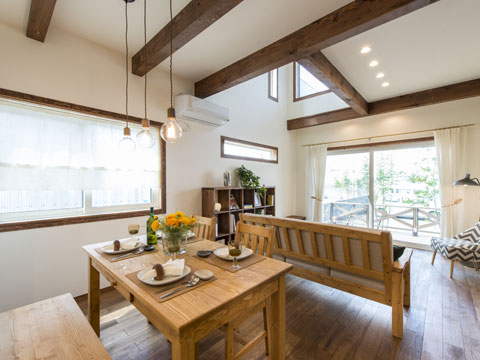
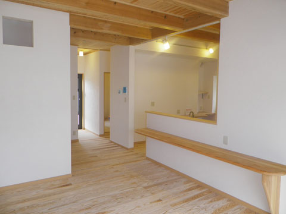
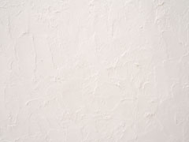
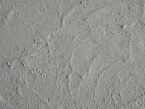
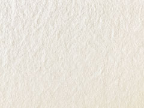

- ホーム
- 自然素材でつくる「本物の健康住宅」｜自然素材のご紹介
Material自然素材にはどんなものがある？
家族の健康を守る
住宅の素材とは？

健康住宅とは、一般的にシックハウス対策ができている住宅を指します。健康住宅の基本になるのは自然素材を使用していることであり、中心となるのは国産の無垢材を中心とした木材です。床や壁はもちろんのこと、梁や土台、柱などにも無垢材を使用することで健康被害を防ぎながら、独特の風合いを持たせることができます。
また、塗り壁には珪藻土や珊瑚などを使用することで見た目もやさしく、調湿効果やホルムアルデヒドの吸収効果といった機能性まで実現できます。豊中市で注文住宅をつくるココロホームでは、本物の素材を使用することにこだわった健康住宅をご提案しています。
無垢材
木の種類
| スギ | 強度もあり、加工がしやすく用途が幅広い |
|---|---|
| ヒノキ | 高い強度がありたい水性・耐久性に優れる |
| カラマツ | 床材や壁材として使われることが多く、独特の味わいが出る |
| サワラ | 水や湿気に強く防ダニ効果も期待できるため水廻りに最適 |
| ケヤキ | 耐久性が高く傷がつきにくいため、床材に利用される |
| サクラ | 木目が美しいため、家具や加工品として人気が高い |
国産木のメリット

食品でよく「地産地消」という言葉を耳にすると思います。これは地域で作られた作物をその地域で消費することを指しますが、木材も地産地消することで得られるメリットがあります。外国産の木材は安価で手に入ることが多いのですが、国産の木を使うことが健康住宅には最適です。
- 輸送費用を抑えることができる
- 防虫剤や防腐剤などを使用する必要がない
- 日本や地域の気候にあった木を使用することができる
- 国産の木を積極的に使うことで植林を促すことができる
集成材と無垢材の違い
同じ木材でも、大きく分けて集成材と無垢材という二種類があります。健康住宅には基本的に無垢材が使われますが、何が違うのかご説明します。
※表は左右にスクロールして確認することができます。
| 集成材 | 無垢材 |
|---|---|
|
|
塗壁材
健康住宅の基本は木材ですが、そのほかにも下地のうえに仕上げとして塗られる「塗壁材」として使われる自然素材があります。よく知られるものとして挙げられる「珪藻土」「漆喰」「布クロス」についてご紹介します。
珪藻土

太古に生息していたプランクトンなどの化石の堆積物です。無数の穴があいているため、調湿効果や脱臭効果があるとして人気を集めています。
漆喰

消石灰を主な原料として、そこにワラやスサなどを加えて練ったものです。強アルカリのため藻がつきにくく、紫外線による自浄作用があります。
布クロス

その名のとおり、布で作られた素材です。一般的なビニールクロスとは異なり布を使用することでシックハウスを防ぐほか、丈夫で味のある経年変化が楽しめることが特徴です。